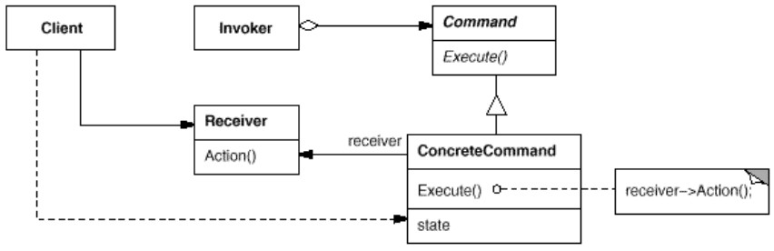

But : encapsuler une requête dans un objet.
Lorsqu'on a besoin d'envoyer des requêtes à des objets sans rien savoir
de l'opération demandée ni de l'objet qui exécutera la requête.
Permet de paramétrer les clients avec différentes requêtes, faire des queues de requêtes, logger les requêtes, gérer l'annulation (undo).
Lorsqu'on a besoin d'envoyer des requêtes à des objets sans rien savoir
de l'opération demandée ni de l'objet qui exécutera la requête.
Command découple l'objet qui invoque une opération (
Invoker) de l'objet qui l'exécute (Reciever).
Pour réaliser cette séparation, on crée une classe abstraite (
Command) avec une méthode, par exemple execute().
Les sous-classes de
Command implémentent execute() en exécutant une méthode d'un receveur de la commande.
Dans ce pattern, la présence de la classe abstraite est nécessaire, car c'est elle qui permet de découpler
Invoker de Reciever :
Invoker sait juste qu'il invoque une commande, mais il ne sait pas de quelle commande concrète il s'agit.
Command est l'équivalent objet d'un callback en langage procédural.
Un callback est une fonction qu'on peut mettre dans une variable et transmettre à du code qui pourra l'exécuter.
Structure
Exemples
sourcemaking
import java.util.List;
import java.util.ArrayList;
// Client
public class DemoCommand2 {
public static void main( String[] args ) {
// Invoker - produce requests
List<Command> queue = new ArrayList<>();
queue.add(new DomesticEngineer());
queue.add(new Politician());
queue.add(new Programmer());
// Reciever - execute requests
for (Command command : queue) {
command.execute();
}
}
}
// ===== Abstract command =====
abstract class Command {
public void execute() {
System.out.println(this.getClass().getSimpleName() + ".execute()");
}
}
// ===== Concrete commands =====
class DomesticEngineer extends Command {}
class Politician extends Command {}
class Programmer extends Command {}
(code dans DemoCommand2.java)
java DemoCommand2
DomesticEngineer.execute() Politician.execute() Programmer.execute()DemoCommand1.java contient le même code mais
Command est une interface.
Menus
DemoMenuCommands.java contient l'utilisation de commandes au sein d'un composite.Pour illustrer l'indépendance entre la création de commandes et leur utilisation, on crée des commandes qu'on associe à des menus, puis on change ces associations.
Swing, awt
Le pattern Command est très présent dans Swing par le biais de sous-interfaces de la marker interfacejava.util.EventListener.
Par exemple
java.awt.event.ActionListener contient une méthode, actionPerformed(ActionEvent e), qui correspond à la méthode execute() dans le vocabulaire du GOF.
Pour pouvoir réagir à une action de l'utilisateur, on associe un
ActionListener à un composant graphique ; lorsqu'une action de l'utilisateur arrive sur ce composant, la méthode actionPerformed() est appelée.
On a typiquement ce genre de code :
unComposantGraphique.addActionListener(new MonListener());
// ...
class MonListener implements ActionListener{
public void actionPerformed(ActionEvent e){
// actions
}
}
Lorsqu'on fait addActionListener(new MonListener()), on bénéficie bien du pattern Command : on sait seulement que MonListener est un EventListener.
On sait seulement qu'elle dispose d'une méthode
actionPerformed(), mais on ne connait rien de son implémentation.
On a cette correspondance :
| Pattern Command | Swing |
|---|---|
Invoker |
Une action utilisateur |
Reciever |
Un composant graphique |
Command |
ActionListener |
ConcreteCommand |
MonListener |
Execute() |
actionPerformed() |
Les deux exemples bénéficient du pattern Command.
Dans le premier cas, on fournit l'implémentation d'une commande concrète à chaque reciever (par le biais d'une lambda expression) ; dans le second cas, la classe
ExitAction est une implémentation explicite d'une commande concrète, ce qui permet de factoriser le code.
Remarquer comment les patterns Command et Observer sont implémentés ensemble :
La méthode
actionPerformed() est à la fois la méthode execute() du pattern Command ET la méthode update() du pattern Observer.
Cela mène à une remarque : Lorsqu'on a un pattern Observer, on a automatiquement un pattern Command.
En effet, le pattern
Command n'a besoin que d'une seule chose : une interface avec une méthode execute() ; cela est fourni par l'interface Observer et sa méthode update().